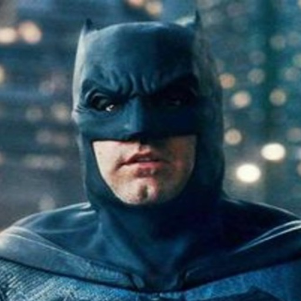
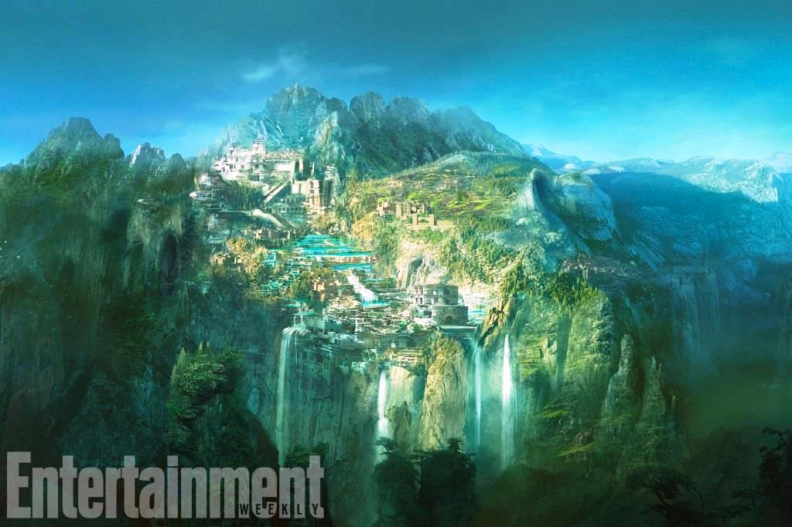
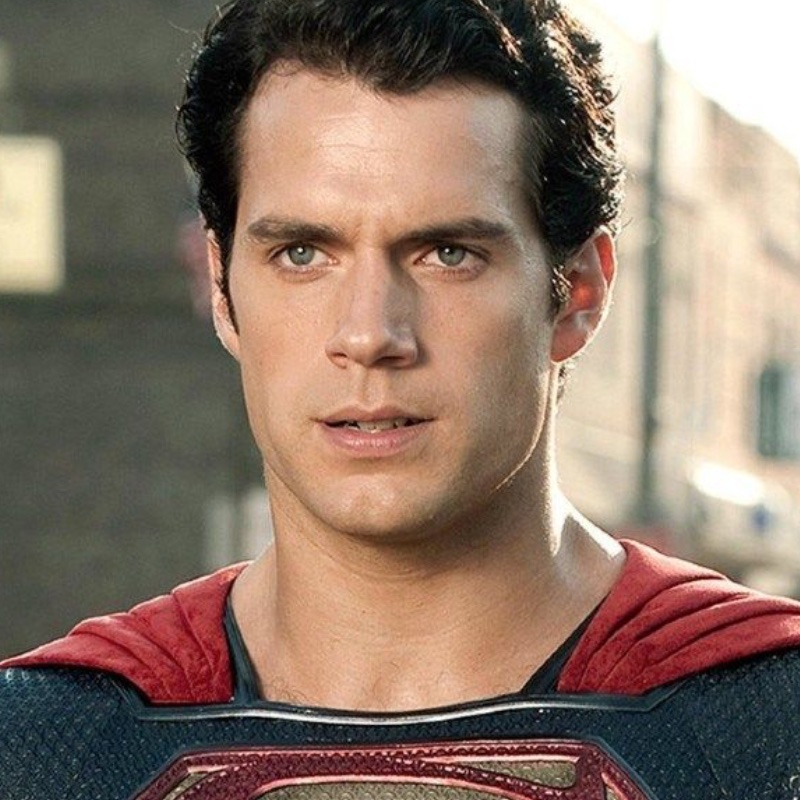

BATMAN
Batman is a superhero who appears in American comic books published by DC Comics. Batman was created by artist Bob Kane and writer Bill Finger, and debuted in the 27th issue of the comic book Detective Comics on March 30, 1939.
Ver más

MUJER MARAVILLA
Princess Diana of an all-female Amazonian race rescues US pilot Steve. Upon learning of a war, she ventures into the world of men to stop Ares, the god of war, from destroying mankind.
Ver más


SUPERMAN
Superman is a fictional superhero, who first appeared in American comic books published by DC Comics. The character was created by writer Jerry Siegel and artist Joe Shuster, and first appeared in the comic book Action Comics #1.
Ver más